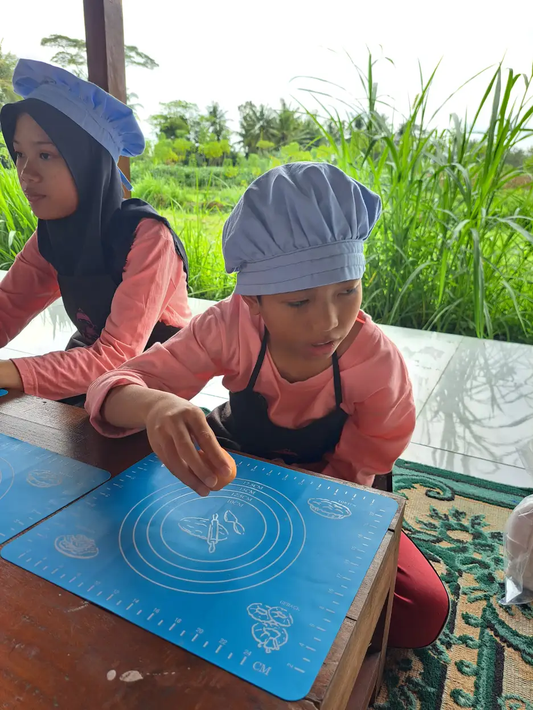
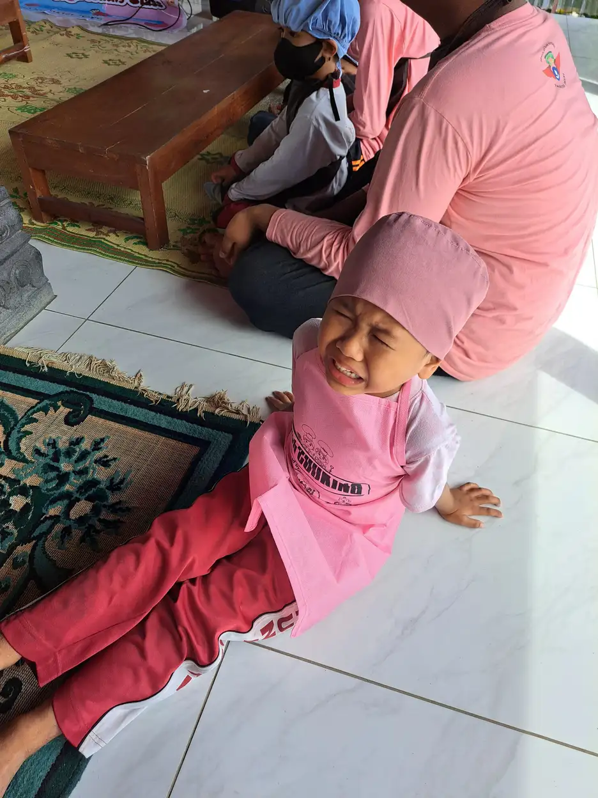

Sensori integrasi adalah proses neurologis di mana otak menerima, mengorganisasi, dan menafsirkan informasi sensorik yang datang dari seluruh tubuh dan lingkungan sekitar. Proses ini berjalan secara otomatis pada sebagian besar orang, memungkinkan kita berjalan tanpa terjatuh, menulis dengan rapi, atau merespons sentuhan dengan wajar. Namun, bagi sebagian anak, terutama anak berkebutuhan khusus (ABK), proses ini tidak berjalan sebagaimana mestinya.
Di Yayasan Ukhuwah Kaffah Amanatullah (YUKA), kami mendampingi anak-anak dengan berbagai kebutuhan khusus melalui Sekolah Inklusi Taruna Imani di Sleman, Yogyakarta. Dari pengalaman kami sehari-hari, kami melihat betapa pentingnya pemahaman tentang sensori integrasi bagi orang tua, guru, dan terapis. Anak yang mengalami gangguan sensori integrasi sering kali disalahpahami sebagai anak nakal, pemilih, atau terlalu sensitif, padahal mereka sedang berjuang dengan cara otak mereka memproses informasi dari dunia di sekitarnya.
Artikel ini akan membahas secara lengkap tentang sensori integrasi, mulai dari pengertian, piramida sensori integrasi, tanda-tanda gangguan, hingga metode terapi yang terbukti efektif. Kami berharap panduan ini bisa menjadi bekal bagi Anda dalam mendampingi anak-anak istimewa dengan lebih percaya diri.
Daftar Isi
Apa Itu Sensori Integrasi?
Sensori integrasi merupakan teori yang pertama kali dikembangkan oleh Dr. A. Jean Ayres, seorang terapis okupasi dan psikolog dari Amerika Serikat, pada tahun 1970-an. Ayres mendefinisikan sensori integrasi sebagai proses neurologis yang mengorganisasi sensasi dari tubuh seseorang dan dari lingkungannya, sehingga memungkinkan tubuh digunakan secara efektif dalam lingkungan tersebut.
Secara sederhana, sensori integrasi adalah kemampuan otak untuk menerima, menyortir, mengolah, dan menggunakan informasi yang diterima dari berbagai indera secara bersamaan. Bayangkan Anda sedang berjalan di trotoar sambil mengobrol dengan teman. Tanpa Anda sadari, otak Anda sedang memproses informasi visual (melihat jalan dan rintangan), auditori (mendengar suara teman dan kendaraan), vestibular (menjaga keseimbangan tubuh), proprioseptif (mengatur langkah kaki), dan taktil (merasakan permukaan tanah melalui alas kaki). Semua informasi ini diintegrasikan dalam hitungan milidetik, memungkinkan Anda berjalan dengan lancar sambil tetap berkomunikasi.
Pada anak yang berkembang secara tipikal, proses ini berlangsung secara otomatis dan efisien. Namun, pada anak dengan gangguan pemrosesan sensorik atau sensory processing disorder (SPD), otak kesulitan mengolah dan merespons informasi sensorik dengan tepat. Akibatnya, anak mungkin menunjukkan reaksi yang berlebihan (hipersensitif) atau justru kurang merespons (hiposensitif) terhadap rangsangan sensorik tertentu.
Pemahaman tentang sensori integrasi sangat penting dalam dunia terapi okupasi, karena kemampuan pemrosesan sensorik yang baik menjadi fondasi bagi hampir semua aspek perkembangan anak, mulai dari kemampuan motorik, bahasa, sosial, hingga kemampuan belajar di sekolah.
Tahukah Anda?
Penelitian menunjukkan bahwa sekitar 5-16% anak usia sekolah mengalami gejala gangguan pemrosesan sensorik. Angka ini meningkat secara signifikan pada anak berkebutuhan khusus, di mana hingga 90% anak dengan autisme dan 50-64% anak dengan ADHD juga mengalami gangguan sensori integrasi.
Piramida Sensori Integrasi
Untuk memahami piramida sensori integrasi, kita perlu mengenal terlebih dahulu tujuh sistem sensorik utama yang dimiliki manusia. Kebanyakan orang hanya mengenal lima indera (penglihatan, pendengaran, penciuman, pengecapan, dan peraba), padahal ada dua sistem sensorik lain yang sangat berperan penting dalam perkembangan anak.
1. Sistem Visual (Penglihatan)
Sistem visual memproses informasi yang diterima melalui mata. Ini mencakup kemampuan mengenali warna, bentuk, jarak, gerakan, dan hubungan spasial antar objek. Anak dengan gangguan pemrosesan visual mungkin kesulitan membaca, menyalin tulisan dari papan tulis, atau menangkap bola. Mereka juga bisa merasa terganggu oleh cahaya yang terlalu terang atau pola visual yang kompleks.
2. Sistem Auditori (Pendengaran)
Sistem auditori memproses suara yang diterima melalui telinga. Tidak hanya sekadar mendengar, sistem ini juga bertugas membedakan jenis suara, menentukan arah sumber suara, dan menyaring suara penting dari kebisingan latar belakang. Anak dengan gangguan auditori mungkin menutup telinga saat mendengar suara tertentu, atau sebaliknya, tampak tidak merespons ketika namanya dipanggil.
3. Sistem Taktil (Peraba)
Sistem taktil adalah salah satu sistem sensorik paling luas karena melibatkan seluruh permukaan kulit. Sistem ini memproses informasi tentang sentuhan, tekanan, suhu, dan rasa sakit. Anak dengan gangguan taktil mungkin menolak menggunakan pakaian dengan label yang gatal, tidak mau menyentuh bahan bertekstur tertentu seperti pasir atau cat, atau justru terus-menerus menyentuh segala sesuatu di sekitarnya.
4. Sistem Vestibular (Keseimbangan)
Sistem vestibular terletak di telinga bagian dalam dan bertanggung jawab atas keseimbangan, koordinasi mata-kepala, serta kesadaran akan posisi tubuh dalam ruang. Sistem ini memungkinkan kita berdiri tegak, berjalan tanpa terjatuh, dan memahami apakah tubuh kita sedang bergerak atau diam. Anak dengan gangguan vestibular mungkin sangat takut dengan gerakan seperti berayun atau meluncur, atau justru selalu mencari stimulasi gerakan dengan berputar-putar dan melompat tanpa henti.
5. Sistem Proprioseptif (Posisi Tubuh)
Sistem proprioseptif menerima informasi dari otot, sendi, dan ligamen tentang posisi dan gerakan tubuh. Sistem ini memungkinkan kita mengetahui di mana bagian tubuh kita berada tanpa harus melihatnya. Misalnya, Anda bisa menyentuh ujung hidung dengan mata tertutup berkat sistem proprioseptif. Anak dengan gangguan proprioseptif sering kali terlihat canggung, menabrak benda, menggunakan kekuatan yang berlebihan saat memegang pensil, atau justru terlalu lemah dalam menggenggam.

6. Sistem Gustatori (Pengecapan)
Sistem gustatori memproses rasa yang diterima melalui lidah, yaitu manis, asin, asam, pahit, dan umami. Anak dengan gangguan gustatori mungkin sangat pemilih dalam makanan (picky eater), menolak makanan dengan tekstur atau rasa tertentu, atau justru memasukkan benda-benda non-makanan ke dalam mulut (perilaku oral seeking). Sistem ini sangat berkaitan erat dengan sistem taktil dan olfaktori.
7. Sistem Olfaktori (Penciuman)
Sistem olfaktori memproses bau yang diterima melalui hidung. Meskipun sering diabaikan, sistem ini memiliki koneksi langsung dengan sistem limbik di otak yang mengatur emosi dan memori. Anak dengan gangguan olfaktori mungkin sangat terganggu oleh bau tertentu seperti parfum atau makanan, atau justru mencari bau-bau yang kuat dengan mengendus benda-benda di sekitarnya.
Konsep piramida sensori integrasi menggambarkan bagaimana ketujuh sistem sensorik ini membentuk fondasi bagi kemampuan yang lebih kompleks. Di dasar piramida terdapat sistem vestibular, proprioseptif, dan taktil sebagai fondasi utama. Di atasnya terdapat pemrosesan sensorik yang lebih kompleks seperti persepsi tubuh, koordinasi bilateral, dan perencanaan motorik. Puncak piramida mencakup kemampuan akademik, emosional, dan sosial. Jika fondasi sensorik di bagian bawah terganggu, maka kemampuan di tingkat atas juga akan terpengaruh. Inilah mengapa stimulasi sensorik anak sejak dini sangat penting.
Tanda-Tanda Gangguan Sensori Integrasi pada Anak
Mengenali gangguan sensori integrasi pada anak tidak selalu mudah, karena gejalanya bisa sangat bervariasi dan sering kali tumpang tindih dengan kondisi lain. Namun, ada beberapa tanda yang perlu diperhatikan oleh orang tua dan pendidik. Berikut adalah tanda-tanda umum yang sering kami temui dalam pendampingan anak-anak di YUKA:
Tanda pada Sistem Taktil
- Menolak menggunakan pakaian dengan tekstur tertentu, label, atau jahitan yang kasar
- Tidak mau menyentuh bahan seperti pasir, cat, lem, atau tanah liat
- Menunjukkan reaksi berlebihan terhadap sentuhan ringan atau tidak sengaja
- Sangat pemilih terhadap tekstur makanan
- Menghindari kegiatan kotor seperti bermain lumpur atau finger painting
- Atau sebaliknya, terus-menerus menyentuh orang dan benda di sekitarnya
Tanda pada Sistem Vestibular
- Sangat takut dengan aktivitas bergerak seperti ayunan, perosotan, atau eskalator
- Sering merasa pusing atau mual saat berkendara
- Kesulitan menjaga keseimbangan saat berjalan di permukaan tidak rata
- Menghindari gerakan yang melibatkan perubahan posisi kepala
- Atau sebaliknya, selalu mencari gerakan dengan berputar-putar, melompat, atau bergoyang
Tanda pada Sistem Proprioseptif
- Sering menabrak benda atau orang lain tanpa sengaja
- Menggunakan kekuatan yang tidak sesuai saat memegang benda (terlalu kuat atau terlalu lemah)
- Kesulitan dalam aktivitas motorik halus seperti menulis, mengancingkan baju, atau menggunting
- Postur tubuh yang kurang baik, sering terlihat lemas atau bersandar
- Suka menggigit atau mengunyah benda-benda seperti pensil, kerah baju, atau rambut
Tanda pada Sistem Visual dan Auditori
- Menutup telinga saat mendengar suara yang bagi orang lain terdengar normal
- Kesulitan berkonsentrasi di lingkungan yang ramai atau berisik
- Sensitif terhadap cahaya terang atau lampu neon
- Mudah terdistraksi oleh gerakan visual di sekitarnya
- Kesulitan dalam membaca atau menyalin tulisan

Catatan Penting untuk Orang Tua
Jika anak Anda menunjukkan beberapa tanda di atas, jangan langsung panik. Setiap anak memiliki preferensi sensorik yang berbeda, dan tidak semua preferensi berarti ada gangguan. Yang menjadi perhatian adalah ketika perilaku sensorik tersebut mengganggu aktivitas sehari-hari anak, proses belajar, atau interaksi sosialnya. Konsultasikan dengan terapis okupasi atau dokter spesialis anak untuk evaluasi lebih lanjut.
Jenis Gangguan Pemrosesan Sensorik
Gangguan pemrosesan sensorik atau sensory processing disorder (SPD) dapat dikategorikan dalam beberapa jenis berdasarkan cara anak merespons input sensorik. Pemahaman tentang jenis-jenis ini sangat penting agar intervensi yang diberikan tepat sasaran.
Hipersensitif (Over-responsive)
Anak yang hipersensitif memiliki ambang sensorik yang sangat rendah, sehingga mereka merespons rangsangan sensorik secara berlebihan. Otak mereka seolah-olah memperbesar volume setiap input sensorik yang diterima. Sentuhan ringan bisa terasa seperti cubitan, suara biasa bisa terdengar sangat keras, dan bau makanan tertentu bisa membuat mereka mual.
Ciri khas anak hipersensitif:
- Cenderung menghindari rangsangan sensorik (sensory avoiding)
- Mudah merasa kewalahan di lingkungan yang ramai
- Sering mengalami tantrum atau meltdown di tempat-tempat dengan stimulasi sensorik tinggi seperti pusat perbelanjaan atau pesta ulang tahun
- Sangat selektif terhadap makanan, pakaian, dan lingkungan
- Menolak disentuh atau dipeluk
- Lebih memilih bermain sendiri di tempat yang tenang
Hiposensitif (Under-responsive)
Kebalikan dari hipersensitif, anak yang hiposensitif memiliki ambang sensorik yang sangat tinggi. Mereka membutuhkan lebih banyak input sensorik untuk bisa merasakan atau merespons rangsangan. Otak mereka seolah-olah memperkecil volume input sensorik, sehingga mereka tampak kurang sadar terhadap lingkungan sekitar.
Ciri khas anak hiposensitif:
- Cenderung mencari rangsangan sensorik (sensory seeking)
- Tampak tidak merespons rasa sakit, suhu ekstrem, atau sentuhan
- Suka menyentuh segala sesuatu, berputar-putar, melompat-lompat, atau membenturkan diri
- Memasukkan benda-benda ke mulut (oral seeking)
- Berbicara dengan suara sangat keras tanpa menyadarinya
- Suka gerakan kencang dan berisiko seperti memanjat tinggi atau berlari sangat cepat
Gangguan Diskriminasi Sensorik
Selain hipersensitif dan hiposensitif, ada juga gangguan diskriminasi sensorik, di mana anak kesulitan membedakan dan menafsirkan kualitas input sensorik. Misalnya, anak sulit membedakan bentuk benda hanya dengan meraba (tanpa melihat), kesulitan menentukan dari arah mana suara berasal, atau tidak bisa membedakan tekanan sentuhan yang lembut dan keras.
Gangguan Motorik Berbasis Sensorik
Jenis gangguan ini memengaruhi kemampuan anak dalam merencanakan dan melaksanakan gerakan motorik. Ada dua sub-kategori utama:
- Dyspraxia (gangguan perencanaan motorik): Anak kesulitan merencanakan, mengurutkan, dan melaksanakan gerakan baru atau kompleks. Mereka mungkin terlihat canggung dan lambat dalam mempelajari keterampilan motorik baru.
- Gangguan postural: Anak kesulitan menstabilkan tubuh selama gerakan atau saat mempertahankan posisi tertentu. Mereka mungkin duduk dengan postur yang buruk, cepat lelah, atau kesulitan menjaga keseimbangan.
Penting untuk dipahami bahwa seorang anak bisa mengalami kombinasi dari beberapa jenis gangguan ini secara bersamaan. Selain itu, respons sensorik anak juga bisa berbeda-beda untuk setiap sistem sensorik. Misalnya, seorang anak bisa hipersensitif terhadap suara namun hiposensitif terhadap sentuhan.
Terapi Sensori Integrasi: Metode dan Aktivitas
Terapi sensori integrasi bertujuan untuk membantu otak anak memproses dan merespons input sensorik dengan lebih efisien. Terapi ini biasanya dilakukan oleh terapis okupasi yang terlatih, dalam lingkungan yang dirancang khusus dengan berbagai peralatan sensorik. Namun, banyak aktivitas sensorik yang juga bisa diterapkan di rumah dan di sekolah sebagai bagian dari kehidupan sehari-hari.
Prinsip Dasar Terapi Sensori Integrasi
Terapi sensori integrasi didasarkan pada beberapa prinsip penting:
- Just-right challenge: Aktivitas yang diberikan harus cukup menantang untuk merangsang perkembangan, namun tidak terlalu sulit sehingga membuat anak frustasi.
- Adaptive response: Anak didorong untuk memberikan respons adaptif yang semakin kompleks terhadap tantangan sensorik.
- Active engagement: Anak harus terlibat secara aktif dan termotivasi dalam kegiatan terapi.
- Child-directed: Terapis mengikuti minat dan motivasi anak untuk memilih aktivitas, sehingga anak merasa memiliki kontrol dan lebih bersemangat berpartisipasi.
Aktivitas Terapi Sensori Integrasi
Berikut adalah beberapa metode dan aktivitas terapi sensori integrasi yang sering digunakan dan telah terbukti efektif:
1. Bermain Ayunan (Stimulasi Vestibular)
Ayunan merupakan salah satu alat terapi vestibular yang paling umum dan efektif. Gerakan berayun membantu merangsang sistem vestibular di telinga bagian dalam, melatih keseimbangan, koordinasi mata-tangan, dan regulasi emosi. Dalam sesi terapi, terapis akan mengatur kecepatan, arah, dan durasi ayunan sesuai kebutuhan anak. Anak yang hipersensitif terhadap gerakan mungkin memulai dengan ayunan yang sangat pelan dan perlahan ditingkatkan, sementara anak yang hiposensitif mungkin membutuhkan gerakan yang lebih cepat dan dinamis.
2. Bermain di Bak Pasir atau Beras (Stimulasi Taktil)
Bermain dengan media seperti pasir, beras, kacang-kacangan, atau bahan-bahan bertekstur lainnya memberikan stimulasi taktil yang kaya. Kegiatan ini membantu anak yang memiliki gangguan taktil untuk secara bertahap menjadi lebih nyaman dengan berbagai tekstur. Aktivitas ini juga bisa dikombinasikan dengan kegiatan belajar, misalnya mencari huruf atau angka yang tersembunyi di dalam bak pasir, sehingga melatih kemampuan diskriminasi taktil sekaligus kemampuan akademik.
3. Trampolin (Stimulasi Proprioseptif)
Melompat di trampolin memberikan input proprioseptif yang intens melalui tekanan pada sendi dan otot. Aktivitas ini sangat bermanfaat untuk anak yang membutuhkan banyak input proprioseptif, membantu mereka merasa lebih "terhubung" dengan tubuhnya. Selain itu, trampolin juga melatih keseimbangan, koordinasi, dan kekuatan otot inti. Banyak terapis menggunakan trampolin sebagai kegiatan pemanasan sebelum memulai tugas yang membutuhkan konsentrasi.
4. Bermain dengan Tekstur Berbeda
Menyediakan berbagai bahan dengan tekstur yang beragam seperti play dough, slime, busa cukur, gel, air, batu-batuan, dan kain dengan berbagai tekstur dapat membantu anak mengeksplorasi dan memperkaya pengalaman taktilnya. Untuk anak yang hipersensitif terhadap sentuhan, aktivitas ini dilakukan secara bertahap dimulai dari tekstur yang paling bisa ditoleransi, kemudian secara perlahan diperkenalkan tekstur yang lebih menantang.
5. Aktivitas Memasak (Stimulasi Multi-sensorik)
Memasak adalah aktivitas multi-sensorik yang luar biasa efektif. Saat memasak, anak secara bersamaan menerima input dari hampir semua sistem sensorik: menyentuh dan mengaduk bahan (taktil dan proprioseptif), mencium aroma bumbu dan masakan (olfaktori), mengecap rasa (gustatori), melihat perubahan warna dan tekstur makanan (visual), mendengar suara penggorengan atau mixer (auditori), dan menjaga keseimbangan saat berdiri dan bergerak di dapur (vestibular). Di YUKA, terapi memasak untuk anak berkebutuhan khusus menjadi salah satu program unggulan kami karena efektivitasnya yang tinggi.
6. Terapi Musik dan Bunyi (Stimulasi Auditori)
Terapi musik menggunakan ritme, melodi, dan instrumen musik untuk memberikan stimulasi auditori yang terstruktur. Anak bisa diajak mendengarkan berbagai jenis musik, bermain alat musik perkusi, bernyanyi, atau bergerak mengikuti irama. Aktivitas ini tidak hanya melatih pemrosesan auditori, tetapi juga membantu regulasi emosi, meningkatkan fokus, dan mengembangkan keterampilan sosial saat dilakukan dalam kelompok.

Tips Stimulasi Sensorik di Rumah
Selain terapi formal, orang tua juga bisa memberikan stimulasi sensorik anak di rumah melalui aktivitas sehari-hari:
- Diet sensorik: Buat jadwal aktivitas sensorik sepanjang hari yang disesuaikan dengan kebutuhan anak, misalnya melompat-lompat sebelum belajar, bermain dengan play dough saat istirahat, atau mandi dengan garam epsom sebelum tidur.
- Ruang sensorik mini: Sediakan sudut rumah dengan bantal besar, selimut tebal, lampu redup, dan mainan sensorik sebagai tempat anak menenangkan diri.
- Aktivitas outdoor: Bermain di taman, berjalan tanpa alas kaki di rumput, bermain air, atau memanjat adalah cara alami untuk memberikan input sensorik yang kaya.
- Rutinitas konsisten: Anak dengan gangguan sensorik umumnya lebih nyaman dengan rutinitas yang dapat diprediksi. Jadwal harian yang konsisten membantu mengurangi kecemasan.
Sensori Integrasi pada Anak Autis dan ADHD
Gangguan sensori integrasi sangat sering ditemukan pada anak dengan autisme dan ADHD. Bahkan, DSM-5 (Diagnostic and Statistical Manual of Mental Disorders edisi ke-5) telah memasukkan hiper- atau hiporeaktivitas terhadap input sensorik sebagai salah satu kriteria diagnostik gangguan spektrum autisme.
Sensori Integrasi pada Anak Autis
Penelitian menunjukkan bahwa hingga 90% anak dengan autisme mengalami gangguan pemrosesan sensorik dalam berbagai derajat. Beberapa pola yang sering ditemukan pada anak autis meliputi:
- Hipersensitivitas terhadap suara tertentu (misalnya suara blender, vacuum cleaner, atau keramaian)
- Perilaku repetitif seperti mengepakkan tangan (hand flapping) atau berputar-putar, yang sering kali merupakan cara anak mencari input sensorik (self-stimulation atau stimming)
- Ketertarikan intens terhadap pola visual seperti benda berputar, cahaya berkedip, atau air mengalir
- Resistensi terhadap perubahan tekstur makanan, sering kali menjadi picky eater yang ekstrem
- Kesulitan dengan sentuhan sosial seperti pelukan atau jabat tangan
Terapi sensori integrasi untuk anak autis perlu disesuaikan dengan profil sensorik unik masing-masing anak. Pendekatan yang digunakan sering dikombinasikan dengan terapi ABA (Applied Behavior Analysis) dan terapi wicara untuk hasil yang optimal.
Sensori Integrasi pada Anak ADHD
Anak dengan ADHD juga sangat rentan mengalami gangguan sensori integrasi. Sekitar 50-64% anak ADHD menunjukkan gejala gangguan pemrosesan sensorik. Beberapa pola yang umum ditemukan:
- Kesulitan menyaring input sensorik yang tidak relevan, sehingga mudah terdistraksi oleh suara, gerakan, atau sentuhan dari lingkungan
- Kebutuhan tinggi akan gerakan dan input proprioseptif, yang sering disalahpahami sebagai perilaku hiperaktif
- Kesulitan duduk diam dalam waktu lama karena sistem vestibular dan proprioseptif membutuhkan stimulasi
- Impulsivitas sensorik, yaitu bereaksi terlalu cepat terhadap rangsangan sensorik tanpa memproses informasi tersebut terlebih dahulu
Memahami komponen sensorik pada ADHD sangat penting karena memberikan perspektif baru dalam penanganan. Misalnya, anak ADHD yang selalu bergerak di kelas mungkin bukan karena tidak mau diam, melainkan karena otaknya membutuhkan input vestibular dan proprioseptif untuk bisa berkonsentrasi. Memberikan alat bantu sensorik seperti bantal bergetar, fidget toy, atau izin untuk berdiri saat belajar bisa sangat membantu.
Perbedaan Penting
Gangguan sensori integrasi (SPD) dan autisme/ADHD adalah kondisi yang berbeda, meskipun sering muncul bersamaan. Tidak semua anak dengan gangguan sensorik memiliki autisme atau ADHD, dan tidak semua anak autis/ADHD memiliki gangguan sensorik yang signifikan. Diagnosis yang tepat oleh tim profesional (dokter anak, psikolog, terapis okupasi) sangat penting untuk menentukan rencana intervensi yang sesuai.
Pendekatan Sensorik di YUKA
Di Yayasan Ukhuwah Kaffah Amanatullah (YUKA), kami menyadari bahwa setiap anak memiliki profil sensorik yang unik. Tidak ada dua anak yang sama persis dalam cara mereka merespons dunia di sekitarnya. Oleh karena itu, pendekatan sensorik yang kami terapkan di Sekolah Inklusi Taruna Imani bersifat individual dan terintegrasi dalam seluruh kegiatan sehari-hari.
Integrasi Sensorik dalam Kurikulum
Kami tidak memisahkan terapi sensorik dari proses belajar-mengajar. Sebaliknya, prinsip-prinsip sensori integrasi diintegrasikan ke dalam kurikulum dan rutinitas harian anak. Guru-guru kami dilatih untuk mengenali kebutuhan sensorik masing-masing siswa dan menyesuaikan lingkungan belajar sesuai kebutuhan tersebut. Misalnya, anak yang membutuhkan input vestibular diizinkan untuk berdiri atau menggunakan bola duduk saat belajar, sementara anak yang hipersensitif terhadap suara diberikan posisi duduk yang lebih tenang.
Program Terapi Memasak
Salah satu program unggulan YUKA yang sangat kaya akan stimulasi sensorik adalah terapi memasak. Dalam program ini, anak-anak diajak memasak berbagai makanan sederhana, mulai dari membuat kue, mencampur adonan, memotong sayuran (dengan pengawasan ketat), hingga menghias makanan. Setiap langkah dalam proses memasak melibatkan berbagai sistem sensorik secara bersamaan, menjadikannya latihan sensori integrasi yang sangat efektif dan menyenangkan bagi anak-anak.
Lingkungan yang Sensorik-Friendly
Kami merancang lingkungan sekolah yang ramah sensorik. Ini meliputi pencahayaan yang bisa disesuaikan, area bermain dengan berbagai peralatan sensorik, sudut tenang untuk anak yang membutuhkan istirahat sensorik, dan pengaturan kelas yang meminimalkan distraksi visual dan auditori. Kami juga menyediakan berbagai alat bantu sensorik yang bisa digunakan anak selama proses belajar.
Kolaborasi dengan Orang Tua
Peran orang tua dalam pendidikan inklusi tidak bisa dipisahkan dari keberhasilan intervensi sensorik. Di YUKA, kami aktif melibatkan orang tua dalam proses terapi dengan cara memberikan edukasi tentang profil sensorik anak mereka, mengajarkan teknik stimulasi sensorik yang bisa diterapkan di rumah, dan melakukan evaluasi berkala bersama orang tua. Kami percaya bahwa konsistensi antara pendekatan di sekolah dan di rumah akan menghasilkan kemajuan yang lebih cepat dan bertahan lama.
"Setiap anak merasakan dunia dengan caranya sendiri. Tugas kita bukan memaksa mereka merasakan seperti anak lain, melainkan membantu mereka memahami dan mengelola pengalaman sensorik mereka sendiri dengan lebih baik." - Tim Terapis YUKA
Pendekatan Holistik
Kami memahami bahwa sensori integrasi tidak berdiri sendiri. Gangguan pemrosesan sensorik sering berkaitan erat dengan aspek perkembangan lain seperti motorik halus, kemampuan bahasa, regulasi emosi, dan keterampilan sosial. Oleh karena itu, pendekatan kami bersifat holistik, memperhatikan seluruh aspek perkembangan anak secara bersamaan. Terapis dan guru bekerja dalam tim untuk menyusun program yang komprehensif dan sesuai dengan kebutuhan masing-masing anak.
FAQ Seputar Sensori Integrasi
1. Apa itu sensori integrasi?
Sensori integrasi adalah proses neurologis di mana otak menerima, mengorganisasi, dan menafsirkan informasi sensorik dari seluruh tubuh dan lingkungan. Proses ini memungkinkan seseorang merespons situasi secara tepat, misalnya menjaga keseimbangan saat berjalan, menulis dengan rapi, atau merespons sentuhan dengan wajar. Teori ini pertama kali dikembangkan oleh Dr. A. Jean Ayres pada tahun 1970-an.
2. Apa saja tanda gangguan sensori integrasi pada anak?
Tanda gangguan sensori integrasi pada anak meliputi: menghindari atau sangat sensitif terhadap sentuhan, suara, atau cahaya; kesulitan menjaga keseimbangan dan koordinasi tubuh; sering menabrak benda atau orang; tidak suka tekstur makanan tertentu; sulit berkonsentrasi di lingkungan yang ramai; menunjukkan respons berlebihan atau terlalu minim terhadap rasa sakit; serta kesulitan dalam aktivitas motorik halus seperti menulis atau mengancingkan baju.
3. Apakah gangguan sensori integrasi bisa disembuhkan?
Gangguan sensori integrasi tidak dapat disembuhkan secara total karena berkaitan dengan cara kerja sistem saraf. Namun, dengan terapi sensori integrasi yang konsisten dan tepat, anak dapat belajar mengelola input sensorik dengan lebih baik. Banyak anak menunjukkan kemajuan signifikan setelah menjalani terapi rutin, sehingga mereka mampu beraktivitas dengan lebih nyaman dan mandiri dalam kehidupan sehari-hari.
4. Berapa lama terapi sensori integrasi perlu dilakukan?
Durasi terapi sensori integrasi bervariasi tergantung pada tingkat keparahan gangguan dan respons masing-masing anak. Pada umumnya, terapi dilakukan 1-3 kali per minggu dengan durasi 45-60 menit per sesi. Hasil biasanya mulai terlihat setelah 3-6 bulan terapi rutin. Beberapa anak mungkin memerlukan terapi selama 1-2 tahun, sementara yang lain bisa lebih cepat atau lebih lama tergantung kondisi individual.
5. Apakah terapi sensori integrasi tersedia di YUKA Yogyakarta?
Ya, YUKA (Yayasan Ukhuwah Kaffah Amanatullah) menerapkan pendekatan sensorik dalam pendampingan anak berkebutuhan khusus di Sekolah Inklusi Taruna Imani, Sleman, Yogyakarta. Pendekatan ini diintegrasikan dalam kegiatan sehari-hari seperti terapi memasak, aktivitas bermain, dan pembelajaran di kelas. Hubungi kami di +62 812-2991-2332 atau kunjungi website yukaindonesia.com untuk informasi lebih lanjut.